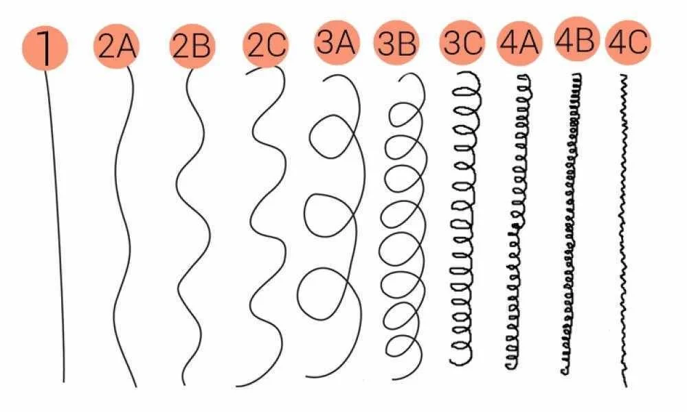

Clique em um dos botões acima para ver as características de cada curvatura.
Testes Capilares
TESTE DE POROSIDADE
Alta Porosidade: Absorve rapidamente a umidade.
Média Porosidade: Retém água e nutrientes na medida certa.
Baixa Porosidade: Cutículas fechadas, demora a absorver água.
Comece o Cronograma
Seu cabelo não precisa seguir padrão nenhum. Só precisa seguir você.
Cronograma Capilar
| Semana | Segunda | Terça | Quarta | Quinta | Sexta | Sábado | Domingo |
|---|---|---|---|---|---|---|---|
| 1ª Sem | Hidratação + Rotina Noturna |
Umectação Noturna |
Nutrição + Rotina Noturna |
Acidificação | Hidratação + Rotina Noturna |
Reconstrução | Umectação Rápida + Rotina Noturna |
| 2ª Sem | Nutrição | Hidratação + Rotina Noturna |
Umectação Noturna |
Acidificação | Nutrição + Nutrição Leve |
Hidratação | Hidratação |
| 3ª Sem | Hidratação | Nutrição | Reconstrução | Descanso | Umectação (1-2h antes) |
Co-wash | Hidratação |
| 4ª Sem | Nutrição | Acidificação | Acidificação + Máscara Leve |
Hidratação | Hidratação | Hidratação Noturna |
Hidratação + Finalização |